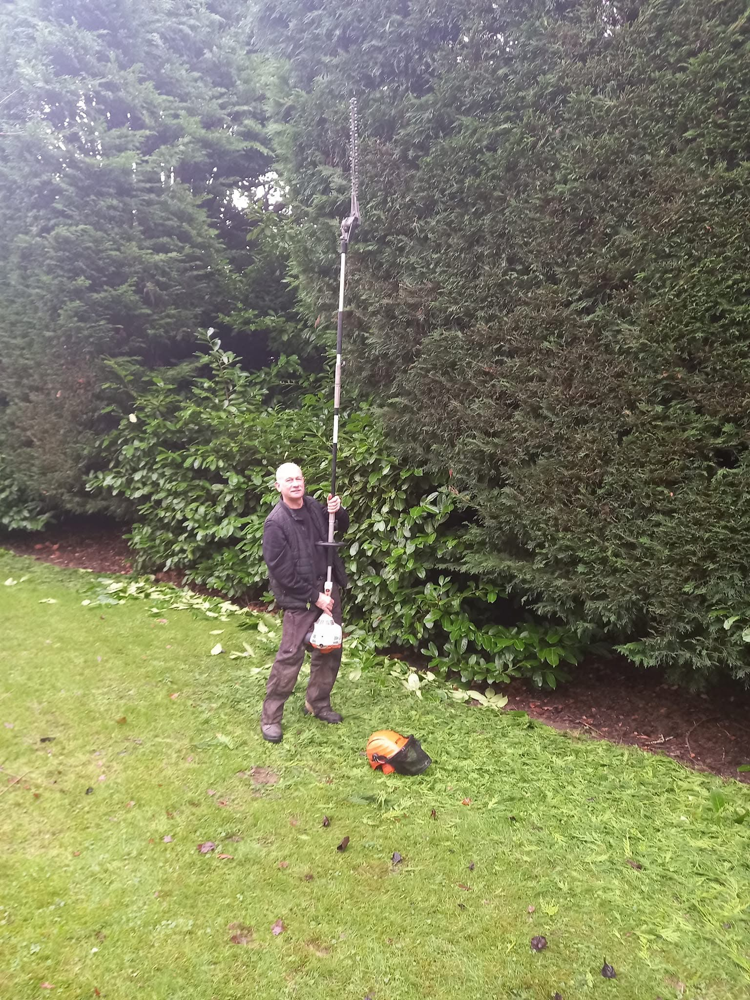
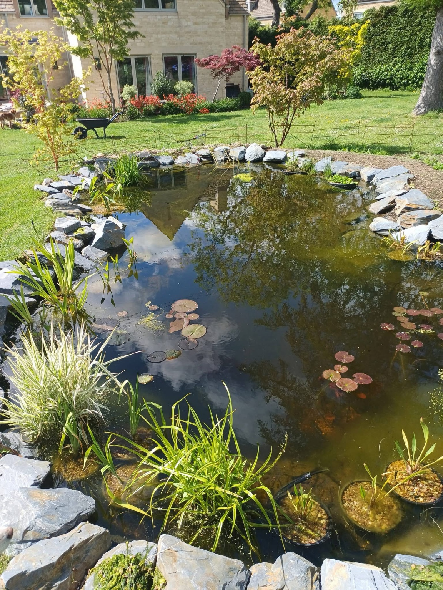

Reliable one-off and regular garden maintenance from a family-run team with over 20 years of experience. We keep gardens tidy, healthy and looking their best throughout the year.
Whether you need dependable regular visits or help getting an overgrown garden back under control, MT’s Garden Services & Landscaping provides practical garden maintenance tailored to your property.
We work across Cheltenham, Winchcombe, the Cotswolds and surrounding Gloucestershire areas. Our small family-run team takes pride in turning up when agreed, working carefully and leaving your garden neat and tidy.
For customers specifically in Winchcombe, see our garden maintenance in Winchcombe page for local service information.

Tell us what you need and how often. We’ll provide friendly advice and a free, no-obligation quote.
REQUEST A QUOTEWe combine decades of experience with the personal service you expect from a local family business.
Martin and Mike bring more than two decades of hands-on gardening and landscaping experience.
A small team that values reliability, attention to detail and treating every property with respect.
From one-off tidy-ups to ongoing visits, we tailor the work to the garden and what you actually need.

We provide garden maintenance throughout our genuine working area, including Cheltenham and communities across the Cotswolds and Gloucestershire.
Contact MT’s for a free, no-obligation garden maintenance quote.